What you need to know (specification)
- 2.1describe the levels of organisation in organisms: organelles, cells, tissues, organs and systems
Levels of organisation 2.1
Living things are organised in levels, from the smallest parts inside a cell up to the whole organism:
Each level has lots of examples. Click a picture (or ▲ ▼) to flip through them:
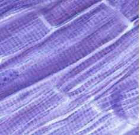
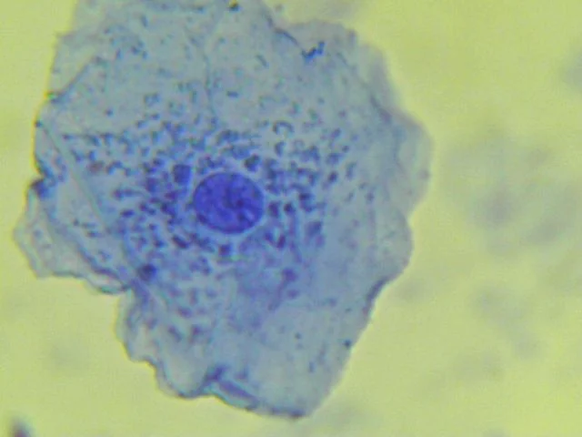
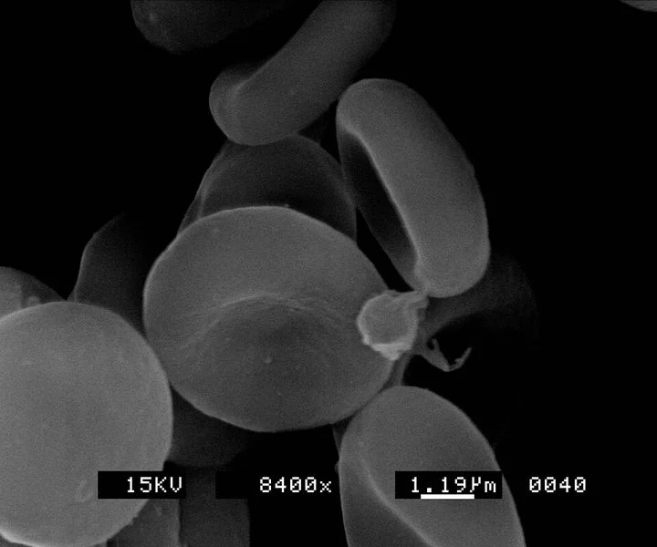
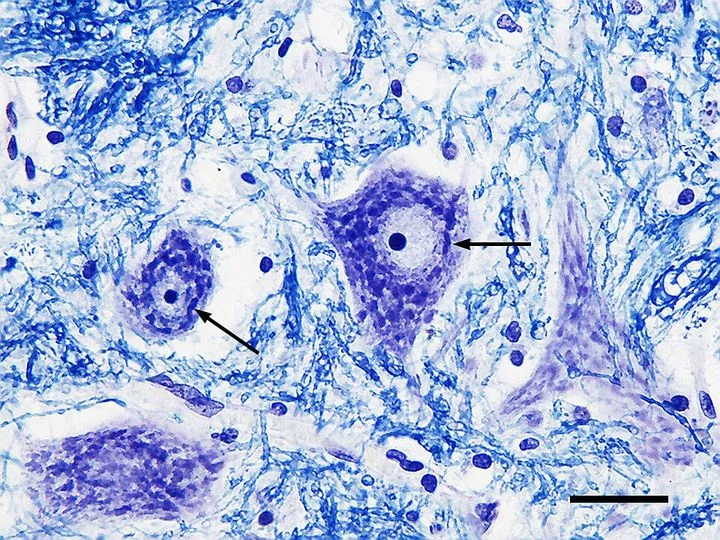

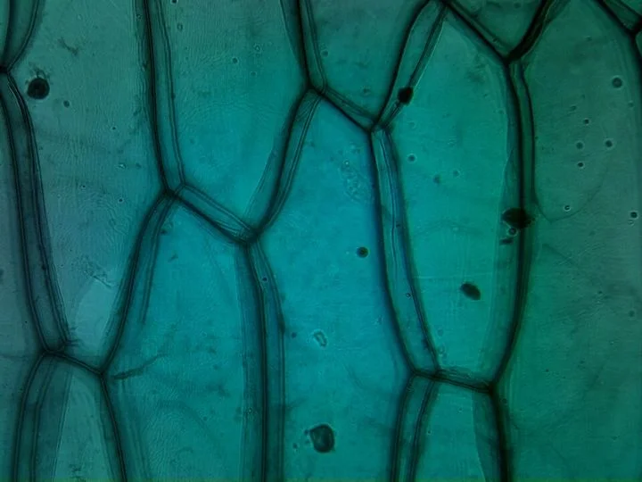

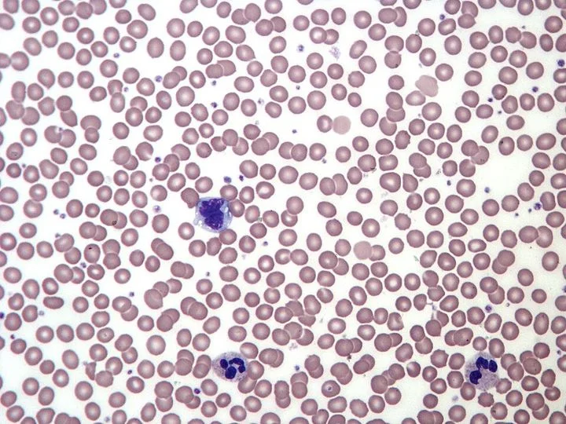
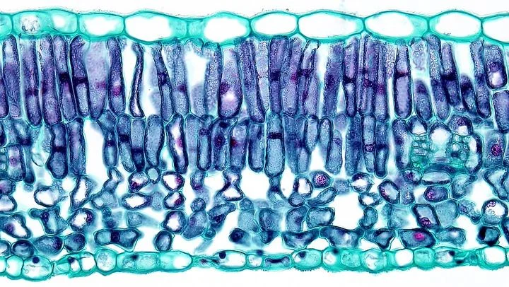
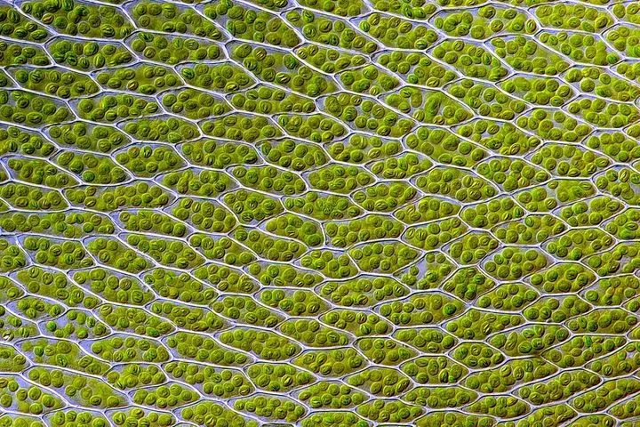
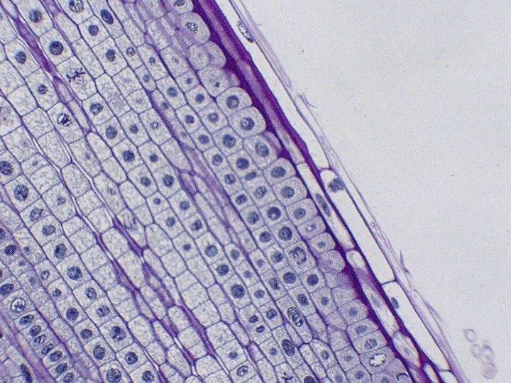

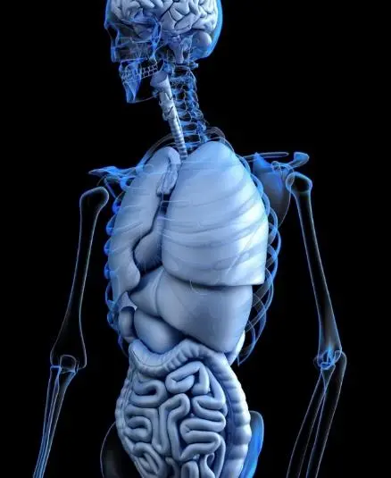
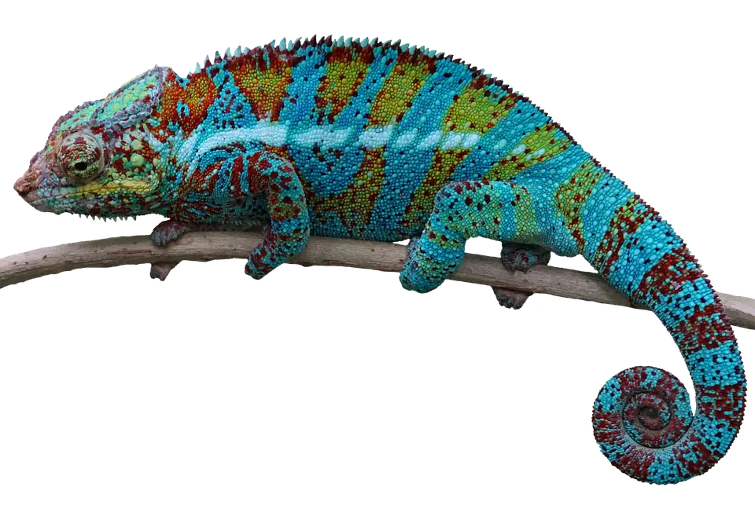
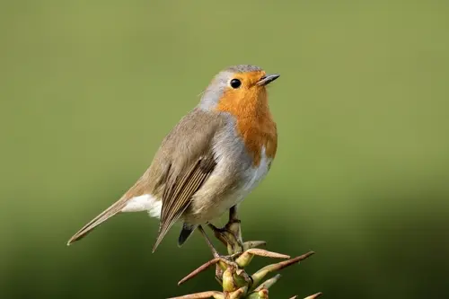

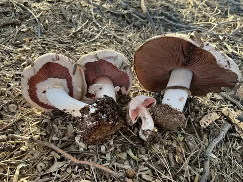
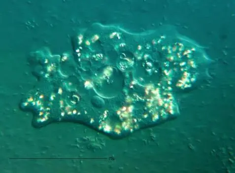
Amoeba: just one cell!" loading="lazy">Each level is made of the one before it.
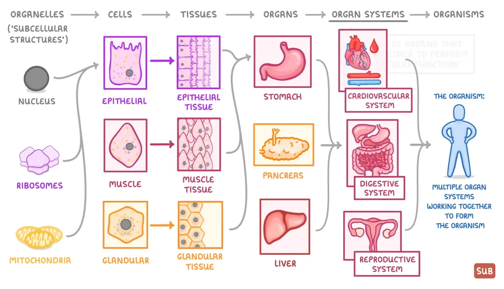
VideoCognito: levels of organisationyoutube.com ↗ InteractiveVirtual microscope: zoom from organism to cellslearn.genetics.utah.edu ↗
InteractiveVirtual microscope: zoom from organism to cellslearn.genetics.utah.edu ↗The levels keep going: molecules (made of atoms) are smaller than organelles, and organisms live in populations, communities and ecosystems, which you study in Topic 4 Ecology.
Organelles and cells 2.1
Cells are the building blocks of life.
Each cell is made up of organelles, which do different jobs that give the cell its function (for example the nucleus and chloroplasts).
There is more on cells in 2b.

Tissues 2.1
Muscle is an example of a tissue. It is made of many muscle cells all working together.
Organs 2.1
Well-known human organs include the brain, heart, liver, kidney and skin.
Plant organs include the leaf and the stem.
Organ systems 2.1
The 7 main organ systems (you will meet them in detail later in the course):
- Digestive
- Respiratory
- Circulatory
- Excretory
- Nervous
- Endocrine
- Reproductive